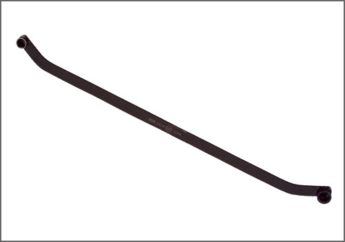
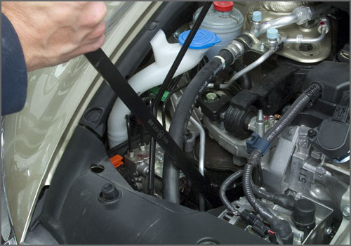

Aftermarket Tools
Honda Serpentine Belt Wrench
AST tool# HON1419


Honda serpentine belt wrench equipped with 14mm and 19mm, 12 point secured sockets, for engagement every 30 degrees. Ideal for strong tensioners used on 2006 and newer civics.
- Lightweight and Slim design
- Equipped with 14mm and 19mm, 12 point securing attachments
- Works on most Honda applications
�
Contact AST for pricing.
Assenmacher Specialty Tools
1-800-525-2943